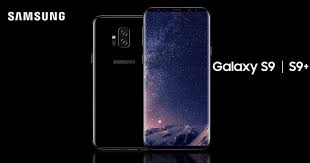

A câmera reimaginada.
A lente de abertura dupla define a categoria e se adapta como o olho humano. É capaz de alternar automaticamente entre várias condições de iluminação com facilidade — fazendo com que suas fotos fiquem ótimas mesmo no claro ou no escuro, de dia ou de noite.
Ficha técnica GALAXY S9
- Tamanho da tela: 5,8 polegadas
- Resolução da tela: QuadHD+ (2960 × 1440 pixels)
- Painel da tela: Super AMOLED
- Câmera principal: 12 MP e abertura variável (f/1.5-2.4)
- Câmera frontal (selfie): 8 MP e f/1.7
- Sistema: Android 8 Oreo
- Processador: Qualcomm Snapdragon 845 (8 núcleos)
- Memória RAM: 4 GB
Ficha técnica GALAXY S9+
- Tamanho da tela: 6,2 polegadas
- Resolução da tela: QuadHD+ (2960 × 1440 pixels)
- Painel da tela: Super AMOLED
- Câmera principal (dual): grande angular de 12 MP e abertura variável (f/1.5-2.4); teleobjetiva de 12 MP e f/2.4
- Câmera frontal (selfie): 8 MP e f/1.7
- Sistema: Android 8 Oreo
- Processador: Qualcomm Snapdragon 845 (8 núcleos)
- Memória RAM: 6 GB
Informações coletadas no site da Samsung BR